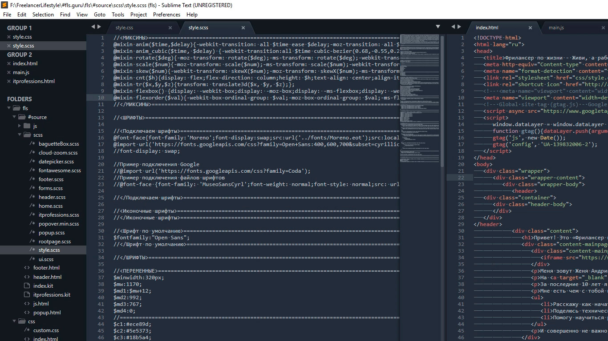

Подсветки синтаксиса
Конечной настройкой внешнего вида будет настройка подсветки синтаксиса. Слово страшное, однако на деле все просто.
Подсветки синтаксиса – это особое окрашивание цветом того или иного елемента в коде. Например, в этой цветовой схеме в HTML файле краcным выделен тег, зеленым — название класса, белым — текст и так далее. Это делает восприятие кода намного понятнее. Обрати внимание на правый нижний угол окна программы, в зависимости от того как кой файл у нас сейчас активен, CSS HTML JS и так далее происходит переключение отображения кода этого конкретного файла.
Зачем же тут что-то делать если все и так отлично работает? Дело в том что в начальном пакете Sublime установлены пакеты подсветки синтаксиса далеко не для всех форматов.
Например, в дальнейшем я планирую работать с файлами SCSS, открыв его я увижу сплошную простыню из набора белых символов. Не очень удобно, правда?

Так вот, в таких случаях я дополнительно устанавливаю нужный пакет.
Открываем наш привычный Commаnd Palette перейдя Tools – Command Palette, либо нажимаем Ctrl+Shift+P набираем install, жмем Install Package Control и ищем дополнение SCSS. Нажимаем на него, после установки мы можем переключить наше отображение на SCSS. Сейчас все выглядит симпатичнее, не так ли?
Настройка внешнего вида редактора важна, так как мы довольно длительное время проводим за написанием кода. Это влияет на нашу усталость, продуктивность, здоровье да и просто на настроение.